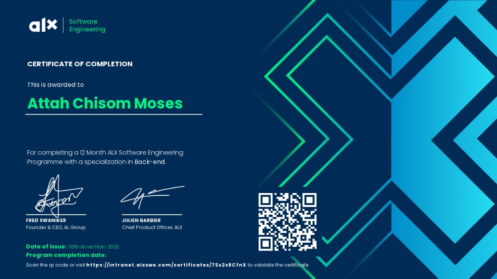

I build performance web applications with seamless user experience
View my projectsI specialize in building high-performance systems where mathematical precision meets low-level engineering. With a deep focus on strong>Rust and C, I architect scalable web applications and fintech solutions designed for memory safety and maximum throughput.
Whether I’m implementing custom cryptographic protocols or integrating AI-driven fraud detection, I prioritize building from the ground up to ensure every line of code serves a purpose. I turn complex theoretical models into robust, production-ready software.
